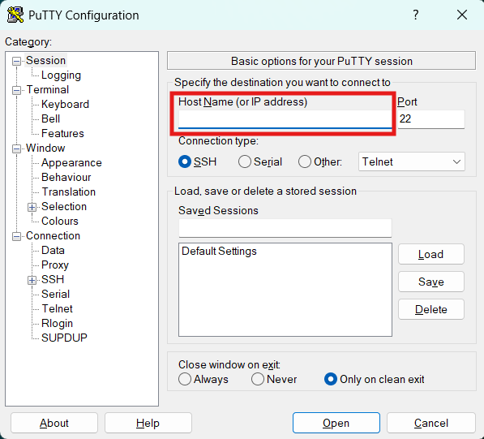

Atreyee - Computational Server Facility of the IEOR Lab
Please read the below instaructions carefully before accessing the server for best results.
How to use and setup the environment
You will need a ssh client to connect to the CPU. CPU login is available through ssh mobius@10.150.224.121 on the IITD network. Windows users can use a ssh client named PuTTY Client to login into the CPU. Once logged into the system, you will have access to your home (backed up) and scratch (not backed up) directories. Check scp to learn how to copy data to-and-from from the CPU and your local machine.
For Linux/Mac users:
Step 1: Open the Linux/Mac terminal on any system on the IITD network.Step 2: Type ssh mobius@10.150.224.121 and hit enter.
Step 3: Type in the password received on your email/whatsapp group for the same and hit enter. For 1st time login it might show some warning regarding the security of the system, you can safely accept the same by hitting enter.
Note: Password will not be visible when typing in!
Step 4: Your terminal should now show mobius@atreyee:~# and you're logged into the CPU.
Use responsibly!
For Windows users:
Step 1: Download and install PuTTY Client by following the on-screen instructions.Step 2: Ensure that your system is on the IITD network.
Step 3: Type ssh mobius@10.150.224.121 in the space highlighted in the below image and hit enter or click open. 
Note: A new window with a terminal will open on your system with a prompt asking for the password.
Step 4: Type in the password received on your email/whatsapp group for the same and hit enter. For 1st time login it might show some warning regarding the security of the system, you can safely accept the same by hitting enter.
Note: Password will not be visible when typing in!
Step 5: Your terminal should now show mobius@atreyee:~# and you're logged into the CPU.
Use responsibly!
Software List
- Python3
Hardware Specifications
- Total number of nodes: 64
- RAM: 128GB
- /home directory space: 3TB
- /scratch directory space: 4TB